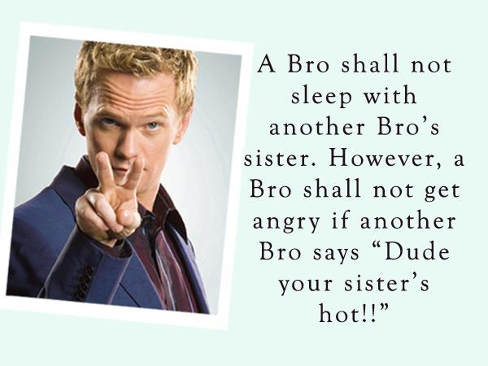

Nick Matsnev
This page is dedicated to the Barney Stinson, one of the most famous characters from American movies.
While the story of The Bro Code is not nearly as simple and elegant as God handing down some stone tablets to Broses, its origins weave all the way back to the dawn of humanity.
Article 1 : Bro’s before ho’s The bond between two men is stronger than the bond between a man and a woman because, on average, men are stronger than women. That’s just science. Did You Know… Article 1 can trace it’s genesis all the way back to Genisis. No, not the Peter Gabriel/Phil Collins pop triad, but the biblical book. The discovery of the Dead Sea Scrolls has unearthed a once-lost passage that documents the earliest infringement of The Bro Code.
Article 2 : A bro is always entitled to do something stupid, as long as the rest of his Bros are all doing it Note: Had Butch Cassidy come charging out of the cabin alone people would have been like, “Dude, come one”. If only one Spanish dude had decided to run down the street in front of a bunch of angry bulls, people would’ve been like, “Dude, come one”. If only Tommy Lee had worn eyeliner in the early day of Motley Crue, pleople would’ve been like, “Lady, come one”. The license to be stupid is why we have Bros in the first place.

“A lie is just a great story that someone ruined with the truth.”